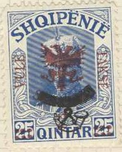
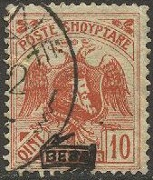
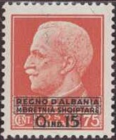

{kind=link}

Shqipnija - Shqiperia - Albanien
Return To Catalogue - Albania 1913-1915 - Due, locals etc. - Italian stamps used in Albania
Note: on my website many of the
pictures can not be seen! They are of course present in the
catalogue;
contact me if you want to purchase the catalogue.
For stamps of Albania issued before 1920, click here
1 q grey 5 q green 10 q red 20 q brown 25 q blue 50 q lilac 1 F blue
Value of the stamps |
|||
vc = very common c = common * = not so common ** = uncommon |
*** = very uncommon R = rare RR = very rare RRR = extremely rare |
||
| Value | Unused | Used | Remarks |
| All values except 50 q and 1 F | c | - | |
| 50 q | * | - | |
| 1 F | * | - | |
These stamps were issued for the prince, who was supposed to become the king of Albania, but he left the country before this happened. (These stamps exist cancelled to order):
Overprinted with a double headed eagle and 'SHKODRA' (1920)


1 q grey (eagle in blue) '2' on 10 q red (red overprint) '5' on 10 q red (green overprint) 10 q red 20 q brown (eagle in blue) 25 q blue '25' on 10 q red (overprint in blue) 50 q lilac '50' on 10 q red (overprint in brown)
Value of the stamps |
|||
vc = very common c = common * = not so common ** = uncommon |
*** = very uncommon R = rare RR = very rare RRR = extremely rare |
||
| Value | Unused | Used | Remarks |
| 1 q | R | R | |
| 2 on 10 q | *** | *** | |
| 5 on 10 q | *** | *** | |
| 10 q | * | * | |
| 20 q | *** | *** | |
| 25 q | RR | RR | |
| 25 on 10 q | *** | *** | |
| 50 q | R | R | |
| 50 on 10 q | *** | *** | |



2 q orange 5 q green 10 q red 25 q blue 50 q green 1 F red Overprinted with fancy 'BESA' in a label (1921)

2 q orange 5 q green 10 q red 25 q blue 50 q green 1 F red Overprinted with 'BESA' in a rectangle (1922)

5 q green 10 q red
Value of the stamps |
|||
vc = very common c = common * = not so common ** = uncommon |
*** = very uncommon R = rare RR = very rare RRR = extremely rare |
||
| Value | Unused | Used | Remarks |
| With Posthorn overprint | |||
| 2 q | * | * | |
| 5 q | ** | ** | |
| 10 q | *** | *** | |
| 25 q | *** | *** | |
| 50 q | ** | *** | |
| 1 F | *** | *** | |
| With fancy 'BESA' overprint | |||
| 2 q | * | * | |
| 5 q | * | * | Exists with double overprint |
| 10 q | * | * | |
| 25 q | ** | ** | |
| 50 q | ** | ** | Exists with double overprint |
| 1 F | ** | *** | |
| With 'BESA overprint in rectangle | |||
| 5 q | * | * | Exists with double overprint |
| 10 q | * | * | Exists with double overprint |
The above stamp has only been issued overprinted with a posthorn (1920) or with 'BESA' in a label (1921). It has never been officially issued without any overprint (but does exist, when the posthorn was not printed in, see example above). It also exists with a 'Q 1' overprint in a rectangle (on top of the 'BESA' overprint, 1922):

Newspaper stamp of 1922; overprinted 'Q 1' in a rectangle
(together with the 'BESA' overprint)
Without overprint 2 q orange 5 q green 10 q red 25 q blue 50 q blue 1 F violet 2 F olive Surcharged '= 1 =' on 2 q orange (1924) With overprint 'Mbledhje Kushtetuese' and lozenge in violet and black

With 'Mbledhje Kushtetuese' overprint in black and violet and
black lozenge overprint (on the value 25 q, the overprint
'Mbledhje Kushtetuese' seems to be slightly different from the
other values).
2 q orange 5 q green 10 q red 25 q blue 50 q blue With red '+' and surcharged in black (1924)
Surcharged with red cross and value in black
'5 qind.' on 5 q green '5 qind.' on 10 q red '5 qind.' on 25 q blue '5 qind.' on 50 q blue With additional large red cross (1924)
With additional large red cross
'5 qind.' on 5 q green '5 qind.' on 10 q red '5 qind.' on 25 q blue '5 qind.' on 50 q blue
With overprint 'Trimf' i legalitetit Dhetuer 1924' (1924) 2 q orange 5 q green 10 q red 25 q blue 50 q blue 1 F violet 2 F olive '= 1 =' on 2 q orange With overprint 'Republika Shqiptare' (1925):
2 q orange 5 q green 10 q red 25 q blue 50 q blue 1 F violet 2 F olive '= 1 =' on 2 q orange With overprint 'Republika Shqiptare 21 Kallnduer 1925' (1925)
With 'Republika Shqiptare 21 Kallnduer 1925' overprint
2 q orange 5 q green 10 q red 25 q blue 50 q blue 1 F violet '= 1 =' on 2 q orange
1 q orange 2 q brown 5 q green 10 q red 15 q brown 25 q blue 50 q green Different design
1 F red and blue 2 F green and orange 3 F brown and violet 5 F violet and black Overprinted with laurel and 'A.Z.' (1927) 1 q orange (overprint violet) 2 q brown (overprint green) 5 q green (overprint red) 10 q red (overprint blue) 15 q brown (overprint green) 25 q blue (overprint red) 50 q green (overprint blue) 1 F red and blue 2 F green and orange 3 F brown and violet 5 F violet and black Overprinted with laurel and 'A.Z.' and surcharged (1928)
'= 1 =' on 10 q red (laurel overprint red) '= 5 =' (red) on 25 q blue (laurel overprint red) Overprinted with laurel, 'A.Z.', 'Mbr.Shqiptare' and surcharged (1929)
1 on 50 q green (laurel and 'A.Z.' overprint in blue)
5 on 25 q blue (laurel and 'A.Z.' overprint in red)
15 on 10 q red (laurel and 'A.Z.' overprint in blue)
With overprint 'RROFT-MBREITI 8X.1929' (only 5000 stamps issued,
speculative issue)
1 q orange 2 q brown 5 q green 10 q red 25 q blue 50 q green (red overprint) 1 F red and blue 2 F green and orange
Mystery stamps 1 F blue and brown and 2 F green and brown in a
slightly different design, proofs?
With overprint 'Kujtim i Mblehjes Kushtetuese 25.8.28'
1 q red-brown 2 q grey 5 q green 10 q red 15 q brown 25 q blue 50 q lilac 1 F blue and black (red overprint, larger different design) With overprint 'Mbretnia Shqiptare' in an arc and 'ZOG I 1.IX.1928.'
1 q red-brown 2 q grey (red overprint) 5 q green 10 q red 15 q brown 25 q blue (red overprint) 50 q lilac 1 F blue and black (red overprint, larger different design) 2 F green and black (red overprint, larger different design) With overprint 'Mbretnia Shqiptare' in an arc
1 q red-brown 2 q grey 5 q green 10 q red 15 q brown 25 q blue 50 q lilac 1 F blue and black (larger different design) 2 F green and black (larger different design) 3 F red and brown (larger different design) 5 F lilac and grey (larger different design)
1 q black (Butrinto-Ia) 2 q red (design as 1 q) 5 q green (King Zog facing the right) 10 q red (design as 5 q) 15 q brown (design as 5 q) 25 q blue (design as 5 q) 50 q green (design as 1 q) 1 F violet (Ura Zog-U; bridge) 2 F blue (design as 1 F) 3 F dark green (ruins) 5 F brown (design as 3 F) Overprinted '1924 1934' 1 q black 2 q red 5 q green 10 q red 15 q brown 25 q blue 50 q green 1 F violet 2 F blue 3 F dark green Overprinted 'Mbledhja Kushtetuese 12-IV-1939 XVII' (1939)
1 q black 2 q red 5 q green (overprint vertical) 10 q red (overprint vertical) 15 q brown (overprint vertical) 25 q blue (overprint vertical) 50 q green 1 F violet (overprint vertical) 2 F blue (overprint vertical) 3 F dark green 5 F brown
A 10 q stamp with overprint 'Takse' is a postage due stamp
1 q grey (head of horse) 2 q brown (eagle with wings downwards) 5 q green (eagle with wings upwards) 10 q olive (design as 1 q) 20 q lilac (design as 1 q) 15 q red (design as 2 q) 25 q blue (design as 5 q) 30 q olive (design as 2 q) 40 q red (design as 5 q)
I've seen the values 20 q, 30 q and 40 q in a minisheet with inscription '1912 1937' on top and '25 VJETOR' I INDEPENDENCES SHQIPTARE VLEFTA 90 QIND' at the bottom.
1 q violet 2 q red-brown 5 q green 10 q brown 15 q red 20 q violet 25 q blue 30 q olive 50 q dark green 1 F dark blue
I've seen the values 20 q and 30 q twice each on a minisheet with inscription 'MBRETNIJA SHQIPTARE' on top and 'MARTESA E MBRETIT EVENIMENT KOMBTAR VLEFTA: 1 FR.ARI' at the bottom.
1 q lilac (Queen) 2 q red (eagle, helmet, goats head) 5 q green (design as 1 q) 10 q brown (King) 15 q red (design as 1 q) 20 q green (mythical scene) 25 q blue (design as 10 q) 30 q blue (King) 50 q black 1 Fr black (design as 10 q)
I've seen the values 30 q, 20 q and 15 q printed in a minisheet with '1.Shtatuer 1928-1938' on top and '10 vietori i Shpalljes se Mbretnis' at the bottom.
1 q grey (man with local costume) 2 q green (man with local costume) 3 q brown (woman with local costume) 5 q green (King Victor Emanuel III facing the right) 10 q brown (King Victor Emanuel III) 15 q red (design as 10 q) 25 q blue (design as 10 q) 30 q violet (design as 10 q) 50 q black (woman with local costume) 65 q brown (design as 5 q) 1 F grey (castle, larger design) 2 F red-brown (bridge, larger design) 3 F black (ruins, larger design) 5 F black (ancient amphitheatre, larger design) Surcharged '1 QIND' on 2 q green (1942) Overprinted '14 Shtator 1943' in red (1943)
'1 Qind' (red) on 3 q brown 2 q green 3 q brown 5 q green 10 q brown 15 q red 25 q blue 30 q violet '50 Qind' (red) on 65 q brown 65 q brown 1 F grey 2 F red-brown 3 F black Overprinted 'QEVERIJA DEMOKRAT. E SHQIPERISE 22-X-1944' and surcharged
'0,30' on 3 q brown '0,40' on 5 q green '0,50' on 10 q brown '0,60' on 15 q red '0,60' (overprint and surcharge in red) on 25 q blue 'fr.sh. 1' (overprint and surcharge in red) on 30 q violet 'fr.sh. 2' on 65 q brown 'fr.sh. 3' on 1 F grey 'fr.sh. 5' on 2 F red-brown
5 q green 10 q brown 15 q red 25 q blue 65 q brown 1 F grey 2 F brown
5 q green 10 q brown 15 q red 25 q blue 30 q violet 50 q orange 65 q grey 1 F brown

The first airmail stamps were issued in 1925, they have inscription 'POSTA AERORE SHQYPTARE': 5 q green, 10 q red, 25 q blue, 50 q green, 1 F violet and black, 2 F olive and violet, 3 F orange and green.
All values were overprinted diagonally with 'Rep. Shqiptare' in 1927.
All values received an overprint 'REP. SHQYPTARE Fluturim' i I-ar Vlonë-Brindisi 21. IV. 1928' in 1928.

In 1929 these stamps (all 7 values) were overprinted 'Mbr. Shqiptare' in red (see image above).
5 q green 15 q red 20 q blue 50 q grey Slighly different design 1 F blue 2 F brown 3 F violet Overprinted 'TIRANE-ROME 6 KORRIK 1931' (1931) 5 q green 15 q red 20 q blue 50 q grey Overprinted 'Mbledhja Kushtetuese 12-IV-1939 XVII' (1939) 5 q green 15 q red 20 q on 50 q grey
20 q brown
5 q green (shepherds with aeroplane) 15 q red (map with aeroplane) 20 q blue (King Victor Emanuel III, harbour and aeroplane) 50 q dark brown (local woman and aeroplane) 1 F (aeroplane and bridge) 2 F black (old town with aeroplane) 3 F (people waving at aeroplane)